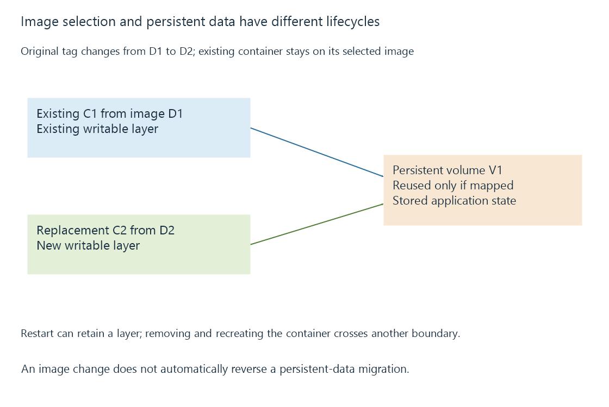

Docker images, running containers and writable layers
A Docker image supplies a packaged filesystem and configuration, while a container adds a running lifecycle and a writable layer.
A Docker image is a packaged starting point for containers. It contains filesystem layers and metadata such as the default command. A container adds a particular runtime configuration, writable layer and process lifecycle.
Several containers can start from the same image while using different mounted data and settings.
Restarting and replacing are different operations
| Operation | Usual relationship to the writable layer |
|---|---|
| Stop and restart the same container | Its existing writable layer remains |
| Remove that container | Its writable layer is removed with it |
| Create another container from the image | A new writable layer begins |
| Reuse an existing mounted volume | The volume's data can remain across replacement |

Writing important application data only into the container's own layer can therefore seem persistent through ordinary restarts but disappear when the container is replaced.
For Emby, the server's intended persistent-data path has to map to storage with the required lifecycle. Reusing the same image alone does not reuse the old container's stored state.
A tag names a reference
An image tag is a reference that can be updated to identify another image. A digest identifies particular image content under the digest mechanism.
An original lifecycle model is:
Tag "server:example" -> image digest D1 today
Tag "server:example" -> image digest D2 later
Existing container C1: still based on its selected D1 image
New container C2: can start from the newly selected D2 image
The labels are fictional. Updating or downloading the tagged image does not rewrite the software running in every existing container automatically.
Software updates can also update stored data
A replacement image can contain a new server or dependency version. When that software opens persistent data, it may perform a supported migration. Reverting the image is not automatically a valid reversal of that data migration.
A reproducible recovery description therefore records both the software selection and the persistent-state generation. The backup scope answers the data part; image identity answers the packaged software part.
See Also
- Software containers and shared-kernel isolation
- Container volumes and managed persistent storage
- Persistent application data across server recreation